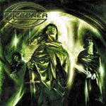

|
|
||
Falconer : The Sceptre of Deception (2003) |
|

http://www.falconer-metal.com |
1. The Coronation 4:38 |
8/10 |
|
"The Sceptre of Deception" es el tercer disco de Falconer, y el primero en el que Kristoffer Göbel sustituye a Mathias Blad, el cantante original de la banda. Lo cierto es que el cambio no se nota demasiado y Kristoffer se demuestra como un sustituto muy adecuado, con una voz bastante parecida a la de Mathias Blad y muy apropiada para el estilo de Falconer. El disco es un buen trabajo que sigue fiel al estilo de power metal melódico con algunos toques folk que Stefan Weinerhall, guitarrista y compositor del grupo, ha venido desarrollando hasta ahora. Un riff de guitarra muy característico de Weinerhall abre "The coronation", un tema de tempo medio, de densas guitarras rítmicas y un cierto toque de folk. "The trail of flames" es una pieza más rápida, con el doble bombo aplicado con acierto para reforzar los cambios de ritmo, algunos pasajes lentos y guitarras rítmicas originales y contundentes. La tercera pista contiene la lenta, algo previsible y de estructura simple "Under the sword". "Night of infamy" comienza despacio y con sonidos limpios, pero pronto evoluciona hacia guitarras distorsionadas y doble bombo. El siguiente, "Hooves over Northland", es un tema de ritmo moderado pero contundente construído sobre las guitarras con más pegada del álbum. En "Pledge for freedom" de nuevo se impone un ritmo marcado y original, reforzado con algunos coros en el momento preciso. El séptimo corte, "Ravenhair", es un fantástico tema que se basa en un elaborado riff de guitarra que se desliza vertiginoso sobre el doble bombo hasta un interludio más lento a mitad de canción, que incluye coros, el estribillo, y una voz femenina, a partir del que de nuevo la canción retoma el doble bombo. La canción que da título al disco, "The sceptre of deception", es una compleja melodía acompañada del doble bombo, donde la voz demuestra su capacidad para variar de tono, los coros aportan atmósfera y emoción, el estribillo destaca poderosamente y donde no faltan cambios de ritmo e interludios más suaves. "Hear me pray" es una balada, acompañada de teclados y guitarras rítmicas con y sin distorsión que crean una atmósfera delicada y melancólica, y a la que quizá falta un estribillo realmente vibrante y desgarrador. "Child of innocence" es una cancioncita suave, melodiosa y acústica que completa el disco. Con riffs de guitarra y solos originales, ritmos y estructura de los temas poco convencionales y un convincente sonido de heavy metal con toques de folk, Falconer tiene un estilo propio muy bien llevado a la práctica en sus tres discos. El cambio de cantante, algo que puede hundir a un grupo, no ha sido traumático y parece que después de este álbum Falconer sigue teniendo cuerda para rato. |
||
- Crítica escrita por Rubén Béjar - |
||